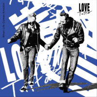

Love Tattoo - When Life Comes Knockin' (Album, 2019)
01 - When Life Comes Knockin' (3:25)
02 - One More Blissful Night (2:34)
03 - Just Like Before (2:25)
04 - Anybody Else But Me (2:31)
05 - How Love Is Meant To Be (2:43)
06 - Not My Style (3:26)
07 - Hey Boy (3:43)
08 - Be Just Fine (3:32)
09 - Man On The Run (4:07)
10 - Find The Key (2:24)
11 - If I'd Only Known (3:14)
12 - That's Not Happening (3:17)
13 - Rockabilly Stomp (2:43)
© Foot Tapping Records :: [FT192]
Notes
Review
157/366 (Project 366)
Modern look of Rockabilly Rock'n'Roll with influences of contemporary tastes. Quite elegant and soft, but pretty rockin' and melodious. And, of course, bright point is female vocals. Fairly dance atmosphere and mood with a relatively energetic and vibrant sound. Boppin', stompin', movin' and groovin'.